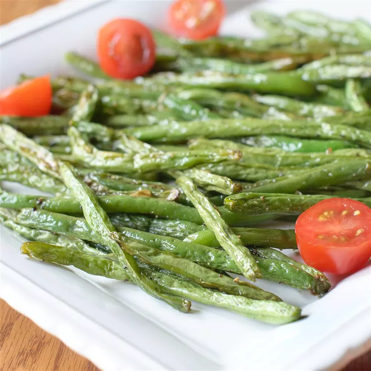

Roasted Green Beans

Description
Roasted green beans are a great alternative to fast-food French fries, and they're better for you too! This 4-ingredient side dish of crisp-tender caramelized green beans is so easy, you can dish it up after just 15 minutes in the oven and serve it for fancy dinners or weeknight suppers. My family and friends love these as a snack or hors d'oeuvre. No matter how many I make, it's never enough!
These roasted green beans are crisp, flavorful, and incredibly easy to make with just a few basic ingredients.
Ingredients
- Green beans
- Olive oil
- Seasonings
Steps
- Preheat the oven to 400 degrees F (200 degrees C).
- Rinse green beans and pat dry with paper towels; spread onto a rimmed baking sheet. Drizzle beans with olive oil, then season with salt and pepper. Use your hands to toss the beans until evenly coated with oil; spread out in a single layer.
- Roast in the preheated oven until beans are crisp-tender, look slightly shriveled, and start to show golden caramelized spots, 15 to 25 minutes.